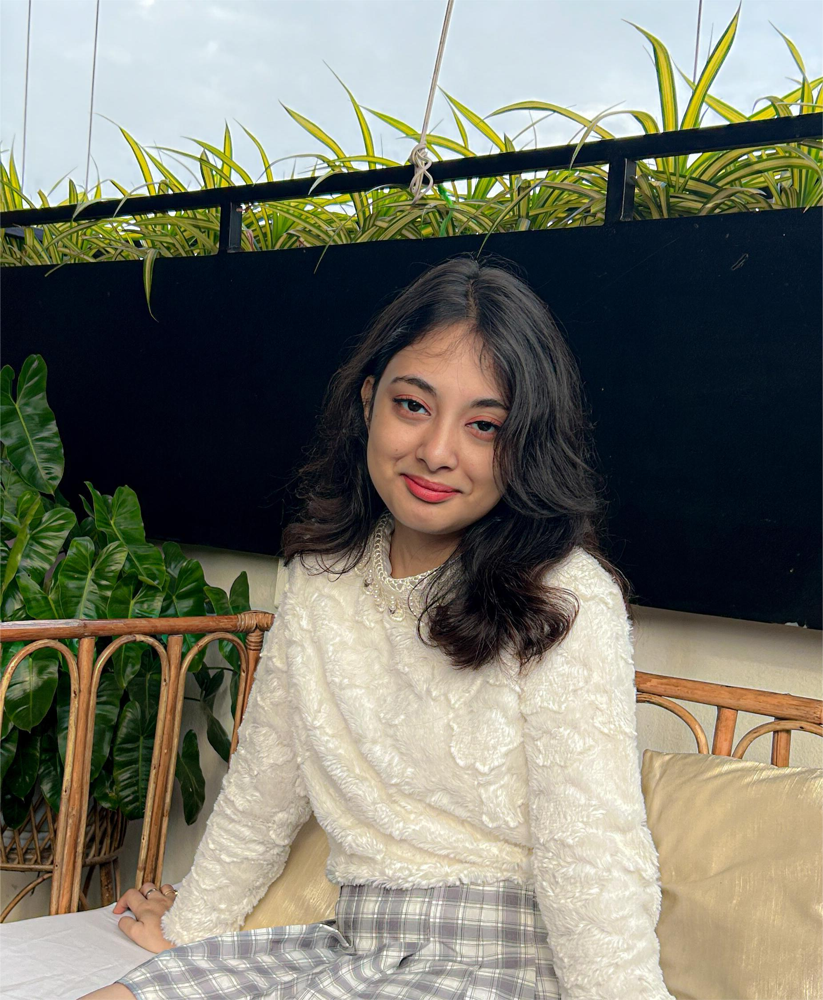

ABOUT ME
Hi! I was born on 14th November 2003 in Jorhat, Assam, but I grew up in a small town called Goalpara. That’s where I spent my childhood and studied from preschool to class 7. In March 2017, I moved to Guwahati for my studies and also because it’s where my family’s home is. I completed the rest of my schooling there, from class 8 to 12.
Right now, I’m pursuing a degree in Computer Science and Engineering at Kalinga Institute of Industrial Technology (KIIT) in Bhubaneswar. I'm someone who connects easily with people — making friends has always come naturally to me!
